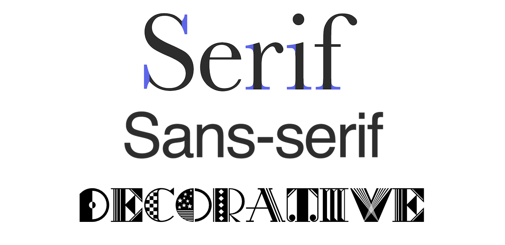

Типографика в веб-дизайне
Типографика стремится придать большее значение вдумчивому и осознанному выбору шрифта, размера, цвета, макета, выравнивания и других факторов, которые влияют на дизайн шрифта на странице.
ПодробнееПодумайте о различном использовании типографики в Интернете, от больших заголовков и жирных блоков текста до текста меньшего размера в основной части, и вы скоро поймете, что это не только важная деталь в веб-дизайне, но это ещё и чистое сочетание искусства и науки.
Первые впечатления являются самыми запоминающимися. Независимо от того, понимаете вы это или нет, ваша типографика помогает создать неподдельную реакцию, до того как пользователи прочитают слово или нажмут кнопку. Типографика имеет потенциал выйти за рамки простого рассказа истории — она показывает пользователю о чём может быть этот сайт, его общую концепцию. Обработка шрифта может задать определенную атмосферу и вызвать эмоции и настроение у посетителя.
Как один из основных принципов дизайна, типография действительно может создать или разрушить дизайн сайта. Несмотря на недавние достижения в технологии веб-шрифтов, мы все еще довольно ограничены в том, что касается креативных типографских макетов, то есть методы замены изображений все еще распространены, но в наши дни у нас есть огромный выбор, когда речь идет о выборе шрифтов для наших дизайнов.
Тем не менее, с ростом использования мобильных устройств в последние годы можно утверждать, что типографский дизайн является недостатком, поскольку он уменьшает время загрузки сайта. Вы можете легко решить эту проблему, отображая типографику в зависимости от разрешения устройства.
Советы при работе с типографикой в веб-дизайне
При работе с текстом в Интернете необходимо учитывать контраст, цвет, удобочитаемость и размер.
Цвета. Цвета на экране монитора создаются светом, и становится все более важным думать о контрасте, потому что глаза напрягаются смотреть и читать текст с плохой контрастностью. Черный текст на белом фоне читать легче всего, потому что он обеспечивает наибольшую контрастность. Теория цвета и выбор цвета играют важную роль в веб-типографии.
Шрифты. Доказано, что шрифты без засечек легче читать в режиме онлайн в виде основного текста, потому что засечки затрудняют слежение за глазом, в то время как для печатного текста все наоборот.Хотя в увеличенном размере и с большим количеством начальных символов — количество дополнительного вертикального пространства между строками шрифта — шрифты без засечек все же могут нормально работать в основном тексте в Интернете. Такие виды шрифтов прекрасно работают в заголовках, потому что они придают ему особый акцент,а еще потому что шрифты с засечками легко читаются при работе с меньшим количеством текста.
Размер. Размер является важным фактором, который следует учитывать при выборе стиля шрифта. Слишком маленький текст трудно читать, но слишком большой текст занимает слишком много места. Найдите размер, который хорошо сочетается с вашим дизайном и легко читается.